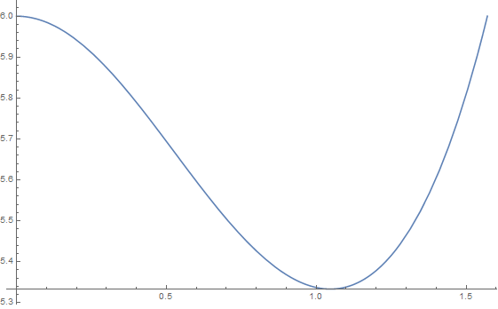
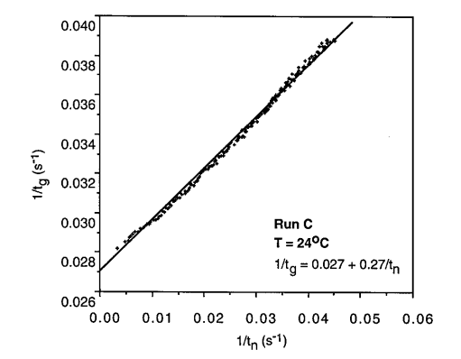

X22 (2022) — English translation
Let $\nu_G$ be the amount of carbon dioxide substance in gaseous form, $\nu_L$ – in solution. The amount of substance in a gas can be expressed in terms of pressure using the ideal gas equation of state. The concentration of carbon dioxide in a solution is expressed in terms of pressure using Henry's law, then we get the equation $$ \nu_0 = \nu _G + \nu _L = \frac{PV_G}{RT} + cV_L = P\left( \frac{V_G}{RT} + k_H V_L\right), $$ from которого pressure $$ P = \frac{\nu_0 R T}{V_G + k_H V_L RT}. $$
The pressure of carbon dioxide in the bubble must balance the external pressure (which we consider equal to atmospheric pressure $P_0$) and the addition due to surface tension $$ \frac{2 \gamma}{R^*} + P_0 = P_{CO_2} = \frac{c}{k_H}. $$ У пузырька одна surface, therefore surface tension созgives pressure $2 \gamma/R$. Solving the equation, we get $$ \frac{2 \gamma}{R^*} = \frac{c - k_H P_0}{k_H},\quad R^* = \frac{2 \gamma k_H}{c - k_H P_0}. $$ Концентрацию можно рассчитать по формуле $$ c = k_H\left( P_0+\frac{2 \gamma}{R^*}\right) \approx 61 \frac{\mathrm{mol}}{м^3}. $$
The average speed of a particle under the action of force $F_z=F$ is $v= \beta F$, so the force creates a flow $j_z^F = n v = n \beta F$. The concentration depends on the coordinate as:
Let us express the volume of the bubble through the amount of substance in it $$ V = \frac{RT}{P} \nu. $$ From the formula from the condition we get velocity изменения volumeа $$ \frac{dV}{dt} = \frac{RT}{P} \frac{d\nu}{dt} = \frac{RT}{P} k S (c-c_i). $$ Substituting выражения via/through diameter: $$ 3 D^2 f_2\frac{dD}{dt} = \frac{RT}{P} \frac{B}{\kappa D} f_1 D^2 (c-c_i) $$ Hence we get equation $$ 2D\frac{dD}{dt} = \frac{2f_1}{3\kappa f_2} \frac{RT}{P}B(c-c_i), $$ on the left side of which is the derivative of the square of the diameter with respect to time.
The surface area of the sphere is equal to the product of the square of the radius $D^2/4$ and the solid angle at which it is visible from the center, therefore $$ f_1 = \frac{\pi }{2} \left(1 + \cos \theta \right) $$ Volume части сферы можно найти как сумму volumeа ball/sphereового сектора, видимого под тем же телесным углом, and конуса. We get $$ f_2 = \frac{\pi}{24}\left(2 + 3\cos \theta - \cos^3 \theta \right) $$

The surface tension force must balance the Archimedes force $$ 2 \pi a_d \gamma \sin \theta = \frac{4 \pi}{3} \rho g R^3 $$ acting on the bubble
Due to the difference in concentrations, a flow of carbon dioxide $$ j = B \frac{c - c_n}{D_m}. $$ Note that один and тот же coefficient диффузии связывает как поcurrent молекул с сностью концентраций, так and молярный поcurrent с сность молярных концентраций, since обычная and молярная концентрации пропорциональны друг другу. Let area дефекта $S$. Volume пузыря связан с количеством вещества в нем $$ V = \nu \frac{RT}{P}. $$ Velocity изменения количества вещества в пузыре $$ \frac{d\nu}{dt} = jS= \frac{c-c_n}{D_m}BS = \frac{P}{RT}\frac{dV}{dt} = \frac{PS}{RT} \frac{dh}{dt} $$ hence it follows, что дефект заполняется с постоянной velocityю $$ \frac{dh}{dt} = \frac{RT}{P} B\frac{c - c_n}{D_m}, $$ and time формирования пузыря $$ t_n = \frac{P}{RT} \frac{h D_m}{B(c-c_n)}. $$ appears
The time for the bubble to grow to its maximum diameter can be found from the results of point B1: $$ t_g = \frac{D_m^2}{K_1(c-c_i)}, $$ where $K_1$ – некоторая постоянная, не зависящая от концентраций. $D_m$ оlimitяется в основном equilibriumм сил поверхностного натяжения and силы Архимеда, therefore also не зависит от концентрации. Then зависимости обратных времен от концентрации углекислого gasа в растворе линейны: $$ \frac{1}{t_g} \sim c-c_i, \quad \frac{1}{t_n} \sim c - c_n. $$ Therefore, the relationship between the inverse times themselves should also be linear.

We believe that the speed of the bubble is established quite quickly. Then it is determined by the equilibrium between the force of viscous friction and the Archimedes force $$ \rho g \frac{4 \pi}{3} a^3 = 6 \pi \eta a U. $$ Hence velocity $$ U = \frac{2 \rho g}{9 \eta}a^2. $$
Let's find the value of the coefficient $K$ for the bubble: $$ K = 0.63 B^{2/3} \frac{U^{1/3}}{a^{2/3}} = 0.63 B^{2/3} \left(\frac{2 \rho g}{9 \eta}\right)^{1/3} = 0.38 B^{2/3} \left(\frac{ \rho g}{ \eta}\right)^{1/3}. $$ Оказывается, оно не зависит от radiusа. Similarly части B свяжем let us express velocity изменения volumeа: $$ \frac{dV}{dt} = \frac{RT}{P} \frac{d\nu}{dt} = \frac{RT}{P} KS \Delta c. $$ Fromменение volumeа связано с изменением radiusа соratioм $$ \frac{dV}{dt} = S \frac{da}{dt} = \frac{RT}{P} KS \Delta c, $$ hence $$ \frac{da}{dt} = 0.38 B^{2/3} \left(\frac{ \rho g}{ \eta}\right)^{1/3} \frac{RT}{P} \Delta c = v. $$ This speed does not depend on the radius of the bubble.
Let us write the equation for the growth of the bubble radius $$ \frac{da}{dt} = v, $$ а also for движения пузырька ($h$ – высота подъема) $$ \frac{d h}{dt} = U = \frac{2 \rho g}{9 \eta}a^2. $$ Hence $$ \frac{da}{dh} = \frac{1}{a^2} \frac{9 \eta v}{2 \rho g}. $$ Integrating, we get $$ a^3 = \frac{27 \eta v}{2 \rho g} h + a^3_0. $$
With each bubble, an amount of carbon dioxide substance comes out of the liquid $$ \nu_b = 10.7 \left( \frac{B \eta}{\rho g}\right)^{2/3} h \Delta c. $$ Его можно поrayandть, умножив volume пузырька на $P/RT$. Разность концентраций вблfromand пузырька and в volumeе жидкости $$ \Delta c = c - k_hP_0 $$ Fromменение концентрации углекислого gasа в жидкости for/at выходе одного пузырька $$ dc =- \frac{\nu _b}{V_L}. $$ Число вышедших пузырьков связано с изменением концентрации соratioм $$ dN = -\frac{dc V_L}{\nu_b} =- 0.093\left( \frac{\rho g }{B \eta} \right)^{2/3} \frac{V_L}{h}\frac{dc}{c - k_H P_0} $$ Integrating, we find число пузырьков $$ N = 0.093\left( \frac{\rho g }{B \eta} \right)^{2/3} \frac{V_L}{h} \ln \frac{c - k_H P_0}{c_n - k_H P_0} \approx 1.1 \cdot 10^7 $$ Численное value for/atведено for правильного coefficientа диффузии. For for/atближенного значения $5 \cdot 10^{-9} ~m^2/s$ we get $N \approx 4.6 \cdot 10^6$.
The height of the foam is related to the volume of bubbles by the relation $H = V/S$, where the volume of foam is $V=V_b N$. The bubble volume corresponding to the final concentration value $$ V_b = 10.7 \left( \frac{B \eta}{\rho g}\right)^{2/3} h (c_n - k_H P_0) \frac{RT}{P}, $$ volume пены $$ V = \frac{\pi \xi^2}{4} h(c_n - k_H P_0) \frac{RT}{P} \ln \frac{c - k_H P_0}{c_n - k_H P_0} , $$ and therefore ее высота $$ H = \frac{RT}{P} (c_n - k_H P_0) h \ln \frac{c - k_H P_0}{c_n - k_H P_0} \approx 0.53 h. $$ Here используется высота столба жидкости $h = V/(\pi \xi^2/4) \approx 17.7 ~cm $.